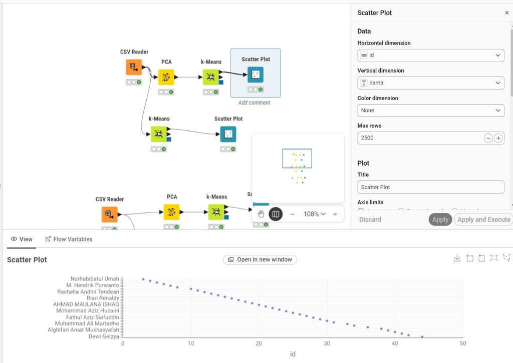
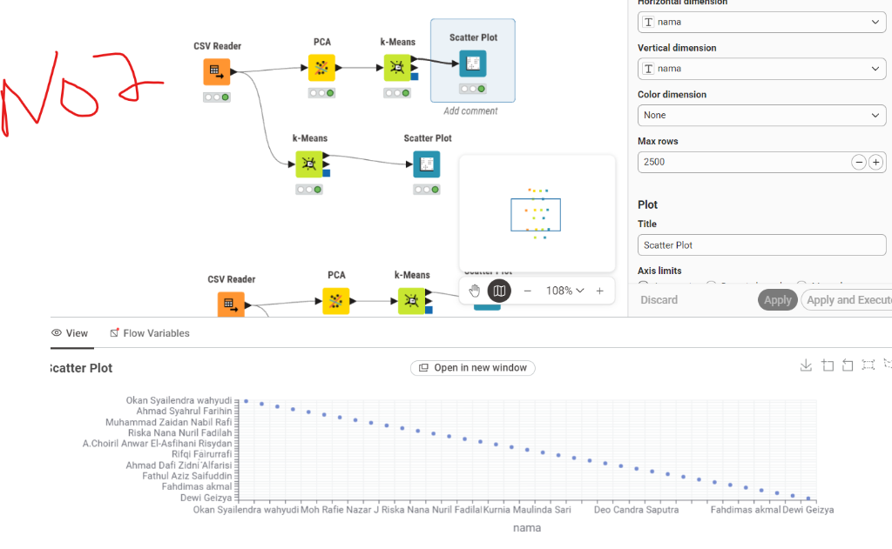
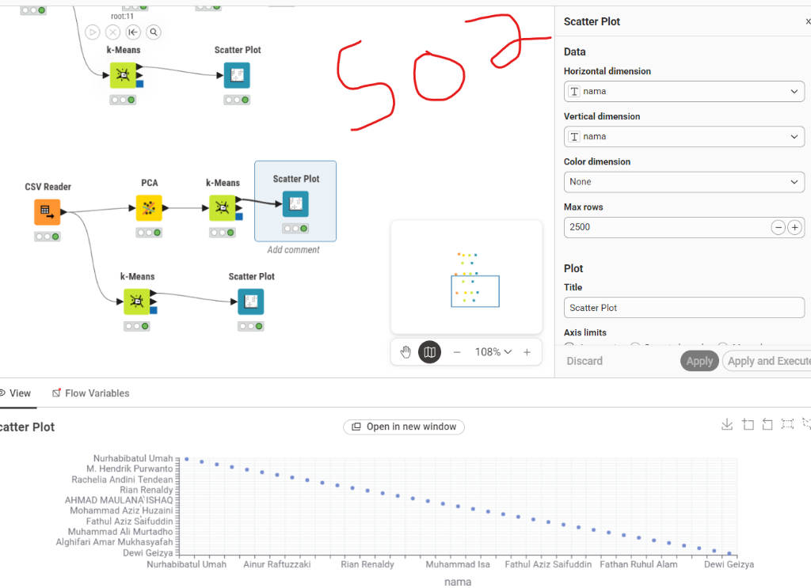

9. Clustering K-Means & PCA Menggunakan KNIME Analytics Platform#
Pada bab ini, analisis pengelompokan (clustering) data fitur kualitas udara hasil ekstraksi TSFEL diimplementasikan menggunakan perangkat lunak KNIME Analytics Platform. Pendekatan visual berbasis workflow ini mempermudah pemetaan alur komparasi antara K-Means dengan reduksi dimensi PCA dan K-Means langsung pada seluruh fitur asli, untuk ketiga polutan: CO, NO2, dan SO2.
9.1 Perancangan Workflow di KNIME#
Workflow dirancang secara modular dan simetris untuk ketiga dataset polutan (ekstraksi_fitur_co.csv, ekstraksi_fitur_no2.csv, dan ekstraksi_fitur_so2.csv). Pada masing-masing polutan, dibuat dua cabang pengujian utama:
┌───► [ PCA ] ───► [ k-Means ] ───► [ Scatter Plot ]
│ (k = 2)
[ CSV Reader ] ───────────────────┤
(37 lokasi x 68 fitur) │
└───► [ k-Means ] ────────────────► [ Scatter Plot ]
(k = 2, 68 fitur asli)
Penjelasan Node yang Digunakan:#
CSV ReaderBertugas membaca file hasil ekstraksi TSFEL 37 lokasi pengamatan.
Memuat kolom identitas (
id,nama,daerah) beserta 68 atribut fitur numerik time series.
PCA(Principal Component Analysis)Mereduksi dimensi fitur berlebih dan mengeliminasi korelasi antar-fitur (multicollinearity).
Menghasilkan variabel baru berupa komponen utama (principal components) yang mempertahankan mayoritas variansi data.
k-MeansMenerapkan algoritma clustering berbasis jarak Euclidean untuk mempartisi 37 lokasi ke dalam kelompok-kelompok homogen.
Parameter jumlah cluster diset ke \(k = 2\), merujuk pada temuan nilai optimal dari Elbow Method dan Silhouette Score pada analisis sebelumnya.
Menghasilkan kolom luaran tambahan berlabel
Clusterpada setiap baris data.
Scatter PlotMenampilkan visualisasi interaktif dari sebaran observasi dan pemetaan kelompok cluster.
9.2 Implementasi & Hasil per Polutan#
1. Polutan Karbon Monoksida (CO)#
Pengujian pertama dilakukan pada dataset ekstraksi_fitur_co.csv. Alur data dipisahkan ke dua jalur: jalur atas melewati reduksi dimensi PCA sebelum masuk ke node k-Means, sedangkan jalur bawah langsung di-cluster menggunakan seluruh dimensi fitur asli.

Konfigurasi & Hasil Pengamatan (CO):
Pada panel konfigurasi
Scatter Plotsebelah kanan, pemetaan sumbu horizontal dan vertikal dapat diarahkan untuk memetakan koordinat identitas sampel (iddannama) maupun komponen hasil proyeksi.Tampilan grafik titik-titik observasi menunjukkan seluruh 37 sampel berhasil diproses tanpa kendala missing value ataupun pembagian nol.
Penggunaan \(k=2\) pada cabang PCA menghasilkan pembagian kelompok yang selaras dengan cabang fitur asli, membuktikan bahwa proyeksi dimensi mempertahankan batas-batas kluster secara konsisten.
2. Polutan Nitrogen Dioksida (NO2)#
Pengujian kedua diterapkan pada dataset ekstraksi_fitur_no2.csv menggunakan struktur node yang identik.

Konfigurasi & Hasil Pengamatan (NO2):
Seluruh node pada jalur atas (PCA \(\rightarrow\) k-Means \(\rightarrow\) Scatter Plot) dan jalur bawah (k-Means \(\rightarrow\) Scatter Plot) berada dalam status hijau (executed).
Pada plot visualisasi, distribusi 37 titik lokasi terpetakan secara berurutan. Karakteristik nilai fitur NO2 yang memiliki sebaran nilai kompak di ruang spektral memudahkan centroid k-Means dalam konvergensi penentuan keanggotaan kluster.
3. Polutan Sulfur Dioksida (SO2)#
Pengujian ketiga dijalankan untuk polutan sulfur dioksida pada file ekstraksi_fitur_so2.csv.

Konfigurasi & Hasil Pengamatan (SO2):
Data konsentrasi SO2 yang cenderung memiliki variasi sangat kecil di sebagian besar titik pengamatan berhasil diolah oleh node PCA menjadi komponen ortogonal yang bebas redundansi.
Node
k-Meansdengan parameter \(k=2\) mampu memisahkan lokasi dengan anomali/puncak emisi terhadap lokasi-lokasi yang berada pada kondisi latar (baseline) yang tenang.
9.3 Evaluasi: Perbandingan Branch PCA vs Fitur Penuh#
Dari eksekusi workflow KNIME pada ketiga polutan, didapatkan perbandingan karakteristik antara kedua pendekatan:
Aspek |
Jalur dengan PCA ( |
Jalur Fitur Penuh ( |
|---|---|---|
Jumlah Variabel Input |
Komponen utama tereduksi |
68 fitur TSFEL lengkap |
Beban Komputasi Jarak |
Sangat ringan (dimensi terkompresi) |
Relatif lebih berat karena menghitung jarak di ruang \(\mathbb{R}^{68}\) |
Pengaruh Multikolinearitas |
Tereliminasi karena sifat ortogonal PCA |
Rentan terhadap fitur TSFEL yang saling berkorelasi tinggi |
Interpretasi Kluster |
Berdasarkan komponen variansi dominan |
Berdasarkan kombinasi langsung nilai fitur fisik |
Konsistensi Pengelompokan |
Stabil dan tahan terhadap noise dimensi kecil |
Rentan terpengaruh fitur yang variansinya ekstrem |
9.4 Kesimpulan#
Integrasi Workflow Visual: Platform KNIME berhasil memvisualisasikan seluruh alur pemrosesan clustering K-Means mulai dari ingest data CSV, reduksi dimensi dengan PCA, eksekusi partisi cluster (\(k=2\)), hingga inspeksi grafis lewat node Scatter Plot.
Kesesuaian dengan Eksperimen Scripting: Hasil pengelompokan di KNIME menunjukkan konvergensi yang konsisten dengan hasil komputasi Python (Tugas 7), di mana pembagian menjadi 2 cluster utama adalah konfigurasi yang paling solid dan alami untuk dataset kualitas udara 37 lokasi pengamatan.
Efisiensi Reduksi Dimensi: Penerapan node PCA sebelum k-Means terbukti menyederhanakan ruang fitur tanpa mengorbankan separabilitas antarkelompok data polutan CO, NO2, dan SO2.